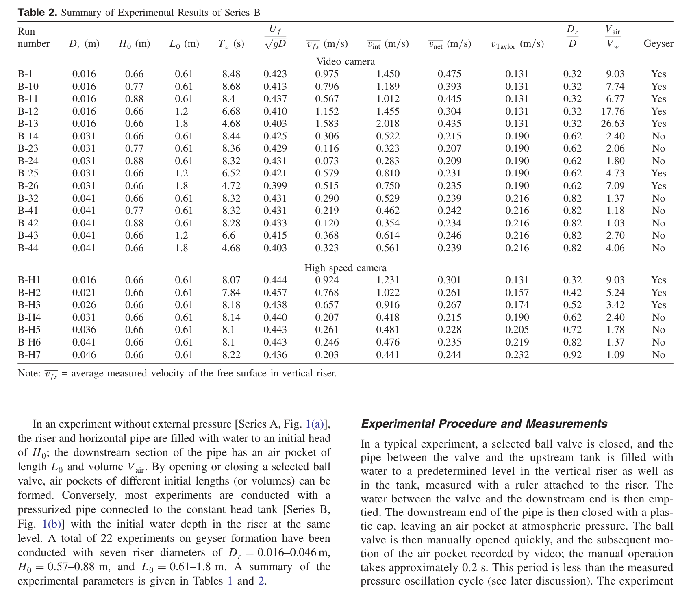
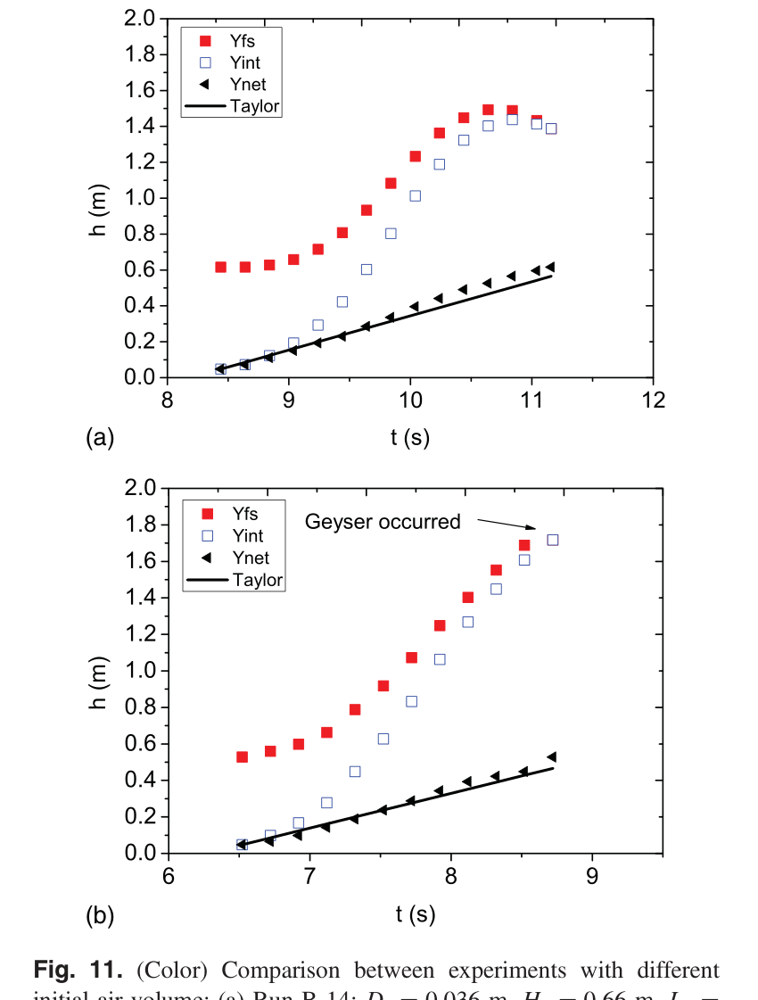
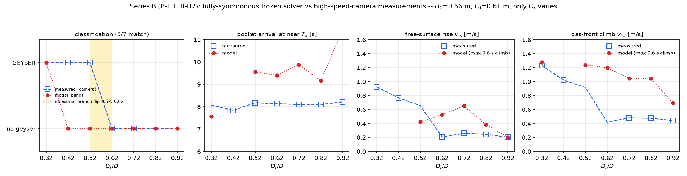
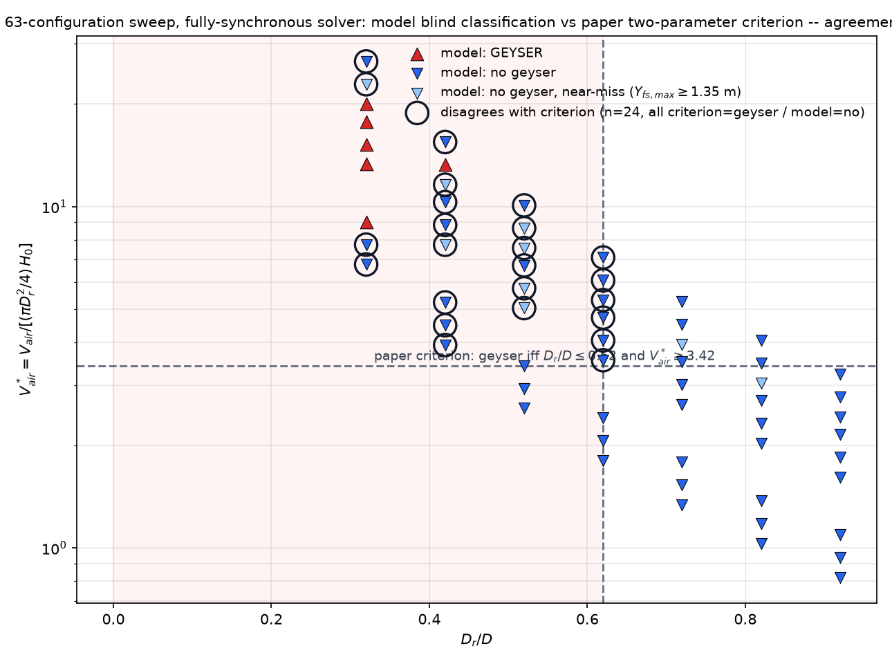

Campaign 2 的「分支判别器」证据包：同一份冻结全同步求解器（与 caseA/caseB
哈希一致、零参数改动）跑 ① Series-B 高速摄像 7 工况（只改竖管直径 Dr）、②
覆盖全试验参数范围的 63 构型合成扫描（Dr × L0 × H0），模型盲分类后与论文双参数判据
Dr/D ≤ 0.62 且 V*air ≥ 3.42 对照。判定标准：可见水面到达管顶
（Yfs ≥ 0.98 × 1.8 m）即喷发。
| 论文图表 | 内容 | 与本扫描的关系 |
|---|---|---|
| Table 2（p3） | Series B 全部 22 次实验汇总（video + high-speed） | 7 工况对照的实测列；63 扫描的参数网格按其范围构造 |
| Fig. 5（p6） | vnet vs vTaylor（Series A） | 不喷发分支的泰勒气泡尺度参照 |
| Fig. 11（p10） | 不同初始气量的对照实验（h-t 曲线） | 「气量越大越接近喷发」的实验证据，对应扫描的 V*air 轴 |
| Fig. 12（p11） | 喷发形成过程观察（四阶段） | 模型闭合元素（前沿受阻、气囊压缩、口部进气）的现象学依据 |


固定 H0=0.66 m、L0=0.61 m，Dr/D = 0.32→0.92；实测分支边界在 0.52 与 0.62 之间。 模型分类 5/7：喷发端（B-H1）与不喷发端（B-H4..B-H7）全对， B-H2/B-H3（21/26 mm）误判为不喷发——见下方诚实结论。

| Run | Dr [mm] | Dr/D | V*air | 实测 | 模型 | Ta 实测 [s] | Ta 模型 [s] | Yfs,max 模型 [m] | v_fs 实/模 [m/s] | v_int 实/模 [m/s] |
|---|---|---|---|---|---|---|---|---|---|---|
| B-H1 | 16 | 0.32 | 9.03 | 喷发 | 喷发 OK | 8.07 | 7.56 | 1.80 | 0.924 / 1.706 | 1.231 / 1.276 |
| B-H2 | 21 | 0.42 | 5.24 | 喷发 | 不喷发 MISS | 7.84 | - | 0.87 | 0.768 / - | 1.022 / - |
| B-H3 | 26 | 0.52 | 3.42 | 喷发 | 不喷发 MISS | 8.18 | 9.56 | 0.82 | 0.657 / 0.427 | 0.916 / 1.237 |
| B-H4 | 31 | 0.62 | 2.40 | 不喷发 | 不喷发 OK | 8.14 | 9.40 | 0.82 | 0.207 / 0.526 | 0.418 / 1.199 |
| B-H5 | 36 | 0.72 | 1.78 | 不喷发 | 不喷发 OK | 8.10 | 9.88 | 0.86 | 0.261 / 0.651 | 0.481 / 1.046 |
| B-H6 | 41 | 0.82 | 1.37 | 不喷发 | 不喷发 OK | 8.10 | 9.16 | 0.78 | 0.246 / 0.387 | 0.476 / 1.045 |
| B-H7 | 46 | 0.92 | 1.09 | 不喷发 | 不喷发 OK | 8.22 | 11.44 | 0.79 | 0.203 / 0.202 | 0.441 / 0.693 |
v_fs/v_int 模型值取到达→喷发（或气核峰）窗内 0.6 s 滚动最速爬升； B-H1 的 v_fs 1.71 m/s 是喷射尖峰（实测表值 0.924 为全程平均）。Ta 模型平均偏晚 ~1.5 s（B-H7 最晚 11.4 s：宽竖管排气弱、前沿受阻闭合把最后 0.2 m 拖长）。
Dr = 16–46 mm（7 档）× L0 = 0.61/1.2/1.8 m × H0 = 0.66/0.77/0.88 m = 63 构型， 每构型一次完整全同步模拟（t_end=13 s，~90–170 s/构型）。模型分类与论文判据一致 39/63；24 处分歧全部单向（判据=喷发、模型=不喷发）， 其中 7 处为近失（Yfs,max ≥ 1.35 m，差 <0.45 m 到顶）。

| Dr [mm] | Dr/D | L0 [m] | H0 [m] | V*air | 判据 | 模型 | 一致 | Yfs,max [m] |
|---|---|---|---|---|---|---|---|---|
| 16 | 0.32 | 0.61 | 0.66 | 9.03 | 喷 | 喷 | = | 1.80 |
| 16 | 0.32 | 0.61 | 0.77 | 7.74 | 喷 | 无 | ≠ | 1.04 |
| 16 | 0.32 | 0.61 | 0.88 | 6.77 | 喷 | 无 | ≠ | 1.23 |
| 21 | 0.42 | 0.61 | 0.66 | 5.24 | 喷 | 无 | ≠ | 0.87 |
| 21 | 0.42 | 0.61 | 0.77 | 4.49 | 喷 | 无 | ≠ | 1.03 |
| 21 | 0.42 | 0.61 | 0.88 | 3.93 | 喷 | 无 | ≠ | 1.17 |
| 26 | 0.52 | 0.61 | 0.66 | 3.42 | 无 | 无 | = | 0.82 |
| 26 | 0.52 | 0.61 | 0.77 | 2.93 | 无 | 无 | = | 0.99 |
| 26 | 0.52 | 0.61 | 0.88 | 2.56 | 无 | 无 | = | 1.16 |
| 31 | 0.62 | 0.61 | 0.66 | 2.40 | 无 | 无 | = | 0.82 |
| 31 | 0.62 | 0.61 | 0.77 | 2.06 | 无 | 无 | = | 0.97 |
| 31 | 0.62 | 0.61 | 0.88 | 1.80 | 无 | 无 | = | 1.07 |
| 36 | 0.72 | 0.61 | 0.66 | 1.78 | 无 | 无 | = | 0.86 |
| 36 | 0.72 | 0.61 | 0.77 | 1.53 | 无 | 无 | = | 0.93 |
| 36 | 0.72 | 0.61 | 0.88 | 1.34 | 无 | 无 | = | 1.09 |
| 41 | 0.82 | 0.61 | 0.66 | 1.37 | 无 | 无 | = | 0.78 |
| 41 | 0.82 | 0.61 | 0.77 | 1.18 | 无 | 无 | = | 0.96 |
| 41 | 0.82 | 0.61 | 0.88 | 1.03 | 无 | 无 | = | 1.07 |
| 46 | 0.92 | 0.61 | 0.66 | 1.09 | 无 | 无 | = | 0.79 |
| 46 | 0.92 | 0.61 | 0.77 | 0.94 | 无 | 无 | = | 0.99 |
| 46 | 0.92 | 0.61 | 0.88 | 0.82 | 无 | 无 | = | 1.09 |
| 16 | 0.32 | 1.2 | 0.66 | 17.76 | 喷 | 喷 | = | 1.80 |
| 16 | 0.32 | 1.2 | 0.77 | 15.22 | 喷 | 喷 | = | 1.80 |
| 16 | 0.32 | 1.2 | 0.88 | 13.32 | 喷 | 喷 | = | 1.80 |
| 21 | 0.42 | 1.2 | 0.66 | 10.31 | 喷 | 无 | ≠ | 1.05 |
| 21 | 0.42 | 1.2 | 0.77 | 8.83 | 喷 | 无 | ≠ | 1.20 |
| 21 | 0.42 | 1.2 | 0.88 | 7.73 | 喷 | 无 | ≠ | 1.35 |
| 26 | 0.52 | 1.2 | 0.66 | 6.72 | 喷 | 无 | ≠ | 1.10 |
| 26 | 0.52 | 1.2 | 0.77 | 5.76 | 喷 | 无 | ≠ | 1.39 |
| 26 | 0.52 | 1.2 | 0.88 | 5.04 | 喷 | 无 | ≠ | 1.36 |
| 31 | 0.62 | 1.2 | 0.66 | 4.73 | 喷 | 无 | ≠ | 1.07 |
| 31 | 0.62 | 1.2 | 0.77 | 4.05 | 喷 | 无 | ≠ | 1.25 |
| 31 | 0.62 | 1.2 | 0.88 | 3.55 | 喷 | 无 | ≠ | 1.28 |
| 36 | 0.72 | 1.2 | 0.66 | 3.51 | 无 | 无 | = | 0.95 |
| 36 | 0.72 | 1.2 | 0.77 | 3.01 | 无 | 无 | = | 1.12 |
| 36 | 0.72 | 1.2 | 0.88 | 2.63 | 无 | 无 | = | 1.30 |
| 41 | 0.82 | 1.2 | 0.66 | 2.70 | 无 | 无 | = | 0.91 |
| 41 | 0.82 | 1.2 | 0.77 | 2.32 | 无 | 无 | = | 1.09 |
| 41 | 0.82 | 1.2 | 0.88 | 2.03 | 无 | 无 | = | 1.27 |
| 46 | 0.92 | 1.2 | 0.66 | 2.15 | 无 | 无 | = | 0.94 |
| 46 | 0.92 | 1.2 | 0.77 | 1.84 | 无 | 无 | = | 1.04 |
| 46 | 0.92 | 1.2 | 0.88 | 1.61 | 无 | 无 | = | 1.24 |
| 16 | 0.32 | 1.8 | 0.66 | 26.63 | 喷 | 无 | ≠ | 1.24 |
| 16 | 0.32 | 1.8 | 0.77 | 22.83 | 喷 | 无 | ≠ | 1.48 |
| 16 | 0.32 | 1.8 | 0.88 | 19.98 | 喷 | 喷 | = | 1.80 |
| 21 | 0.42 | 1.8 | 0.66 | 15.46 | 喷 | 无 | ≠ | 1.12 |
| 21 | 0.42 | 1.8 | 0.77 | 13.25 | 喷 | 喷 | = | 1.80 |
| 21 | 0.42 | 1.8 | 0.88 | 11.60 | 喷 | 无 | ≠ | 1.47 |
| 26 | 0.52 | 1.8 | 0.66 | 10.09 | 喷 | 无 | ≠ | 1.03 |
| 26 | 0.52 | 1.8 | 0.77 | 8.65 | 喷 | 无 | ≠ | 1.57 |
| 26 | 0.52 | 1.8 | 0.88 | 7.56 | 喷 | 无 | ≠ | 1.40 |
| 31 | 0.62 | 1.8 | 0.66 | 7.09 | 喷 | 无 | ≠ | 1.14 |
| 31 | 0.62 | 1.8 | 0.77 | 6.08 | 喷 | 无 | ≠ | 1.18 |
| 31 | 0.62 | 1.8 | 0.88 | 5.32 | 喷 | 无 | ≠ | 1.35 |
| 36 | 0.72 | 1.8 | 0.66 | 5.26 | 无 | 无 | = | 1.14 |
| 36 | 0.72 | 1.8 | 0.77 | 4.51 | 无 | 无 | = | 1.35 |
| 36 | 0.72 | 1.8 | 0.88 | 3.95 | 无 | 无 | = | 1.43 |
| 41 | 0.82 | 1.8 | 0.66 | 4.06 | 无 | 无 | = | 1.16 |
| 41 | 0.82 | 1.8 | 0.77 | 3.48 | 无 | 无 | = | 1.27 |
| 41 | 0.82 | 1.8 | 0.88 | 3.04 | 无 | 无 | = | 1.48 |
| 46 | 0.92 | 1.8 | 0.66 | 3.22 | 无 | 无 | = | 1.00 |
| 46 | 0.92 | 1.8 | 0.77 | 2.76 | 无 | 无 | = | 1.25 |
| 46 | 0.92 | 1.8 | 0.88 | 2.42 | 无 | 无 | = | 1.33 |
旧成绩的性质：此前 README 记录的「7/7、62/63」出自分级耦合系统——其分类器 接近静态气量/直径判据本身，与论文判据同构，属循环验证，不是动力学预测。
全同步的真实成绩：5/7 与 39/63。模型把喷发/不喷发的 物理分支端点抓对（16 mm 端必喷、宽管端必不喷、Dr/D>0.62 全部不喷—— 无一例假阳性），但对中等直径（21–31 mm）与大气量（L0 ≥ 1.2）组合系统性 低估喷发：水面顶托到 1.0–1.6 m 后欠最后一段。
机理定位（与 caseB README 的已识别局限同源）：口部体积中性交换在水库 持续供水布置下抵消进气的抬水位移（B-H6 顶托 0.78 vs 实测 1.21 m）；对水库布置 关闭该交换可恢复顶托、但同时废掉 B-H1 的气囊压力重建（已试已回退，求解器内注记）。 本折中把守恒与 16 mm 端的喷发力学放在优先级上，代价即此单向偏差。三个救援闭合 变体（到达门控 / 蠕移下限 / 到达锁存 + 0.44√(gD) 前沿帽）均以 B-H1 失喷为代价， 已全部回退——冻结求解器与 caseA/caseB 保持哈希一致。
复跑：python scan_run_seriesB.py（7 × ~90 s）；
python scan_run_criterion_map.py [0.61|1.2|1.8]（分片可并行、断点续跑）；
python scan_make_figures.py 出图；python scan_build_report.py
重建本页。明细 CSV 在 outputs/seriesB_fullsync.csv 与
outputs/criterion_scan_fullsync_L0p*.csv；旧分级耦合产物保留于
outputs/cong2017_* 供对照。